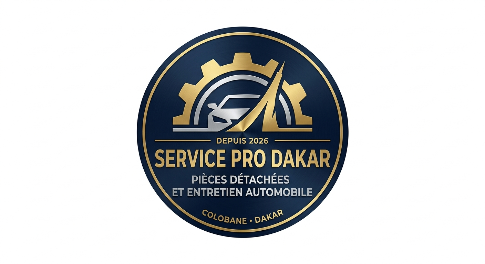
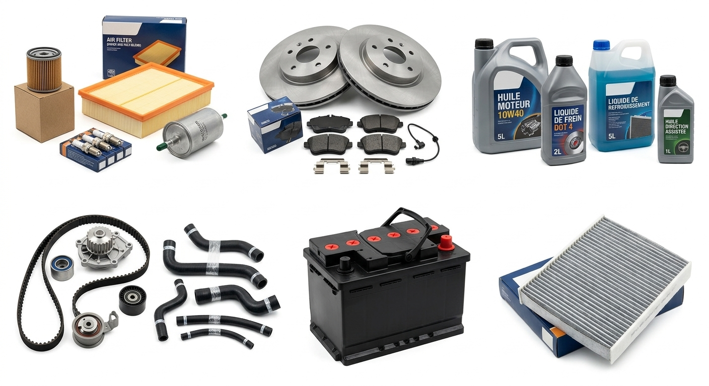
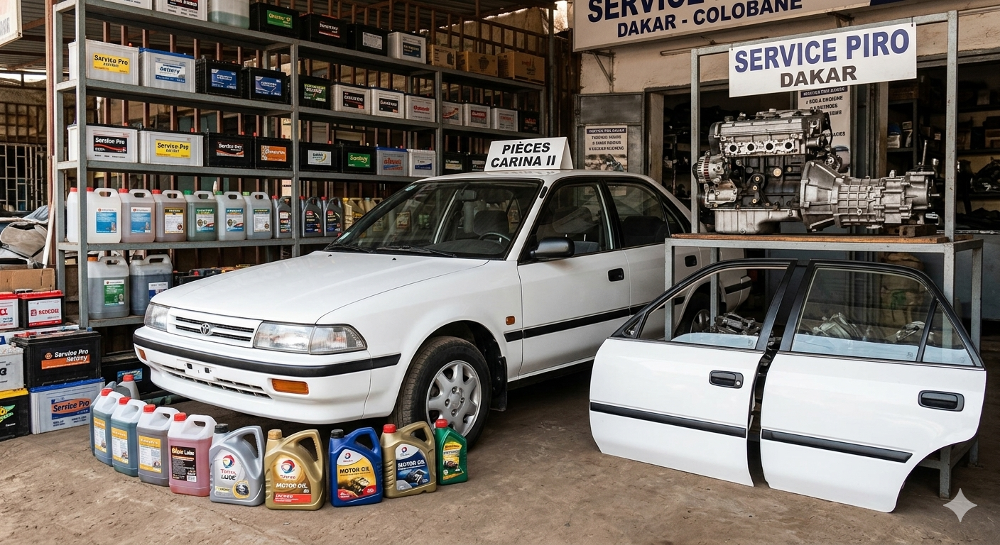
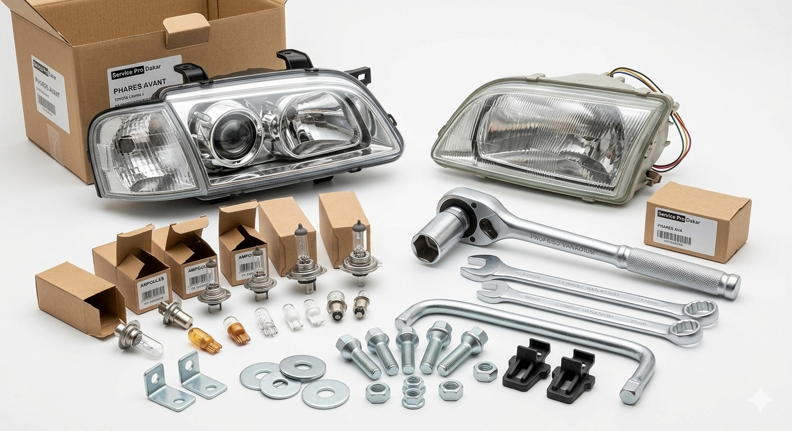

Votre spécialiste en pièces détachées automobiles à Dakar
Commander une pièceBienvenue chez Service Pro Dakar. Basés au cœur de la capitale, nous proposons des pièces de rechange de qualité adaptées à vos besoins avec un suivi rigoureux et une réactivité garantie.

Trouvez toutes les pièces de rechange pour l'entretien et la réparation de vos véhicules (marques européennes, asiatiques et américaines).

Filtres à huile, filtres à air, bougies, lubrifiants moteurs, kits de distribution.
Plaquettes, disques de frein, amortisseurs, cardans, rotules.
Batteries de démarrage, alternateurs, démarreurs et essuie-glaces.

Blocs phares avant et arrière, feux de signalisation et petites ampoules de rechange.
Clés pour desserrer (clés à pipe, plates), assortiments de boulons, vis et écrous.
Pièces d'origine et adaptables de haute qualité au meilleur prix de Colobane.
Colobane, Dakar, Sénégal
En face du jardin contenant le terrain de Basket, juste à côté du monument.